Place a task · Group 3
Where would you place each of these tasks, and who should lead it?
Call the quadrant before you click. Each task was written by one member.
- AK
- CCH
- IKD
- MML
A person leads, AI inside
Agents run it, a person judges
AI alone, with checks
A person decides, AI alongside
Click a task card to place it, or Show all. Tasks are each member’s own; the placements are for discussion.
Problem Set 5 · IKD
My own agent: Interview Invite Catcher
My agent card | Interview Invite Catcher | finished 20 October 2026, 8:45 AM SGT
- The job: Watches my Gmail inbox for interview invitations and alerts me straight away, so that I, a graduate student applying for jobs, never miss one or reply late.
- The trigger: A new email arrives in my Gmail with “interview” in the subject (Gmail search
subject:interview -subject:"ACTION NEEDED"). Made stricter after the tricky case; see “The fix” below. - The tools: Gmail, New Email Matching Search (reads my inbox) and Gmail, Send Email (sends me one alert). Nothing else.
- It must never: Email anyone but me. The “To” field in the Send Email step is typed in as my own address, not mapped from the incoming email, so it cannot reply to a recruiter or anyone else.
- Where a person checks: I read each “ACTION NEEDED” alert when it arrives and open the original email before replying. Each evening I compare my inbox with Zap History to catch missed invites or false alarms.
Three runs, checked against Zap History
At 9:07 AM on 20 October I sent myself three interview invitations. Zap History shows three successful runs between 09:07:43 and 09:07:46, about 25 seconds after the emails arrived, and each alert matched its email. Zap History also has an earlier run at 09:05:51. My JSON export shows it caught the “Graduate Analyst” invitation while it was still an unsent Gmail draft that I was typing (label DRAFT). I come back to this under “The tricky case, run again after the fix”. Click any screenshot to see it full size.
| Run | Test email subject | Alert in my inbox | Right call? |
|---|---|---|---|
| 1 | Interview invitation – Graduate Analyst role | “ACTION NEEDED: Interview invitation – Graduate Analyst role”, with the correct sender, time and preview | Yes, a real invite |
| 2 | Second-round interview: please confirm your slot | “ACTION NEEDED: Second-round interview: please confirm your slot”, with the correct sender, time and preview | Yes, a real invite |
| 3 | Interview schedule – Associate Product Manager | “ACTION NEEDED: Interview schedule – Associate Product Manager”, with the correct sender, time and preview | Yes, a real invite |
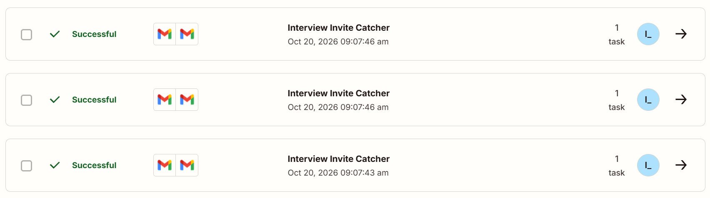
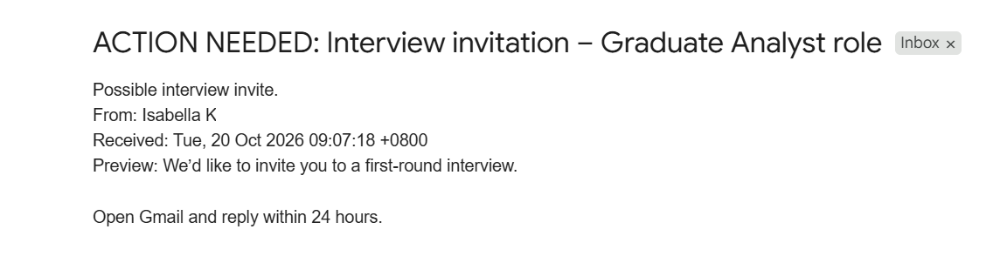
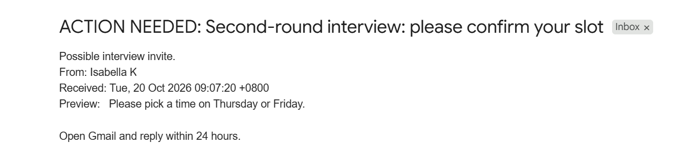
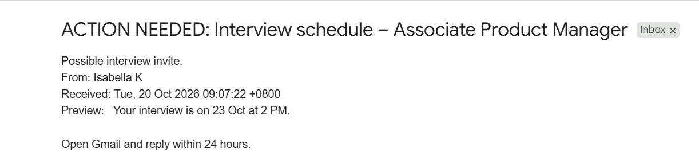
I also opened one run in Zap History. Data in shows the trigger used my exact search, and Data out shows the email it found (“Please pick a time on Thursday or Friday.”, run 2). Both steps were marked successful: the trigger found one new email, and Send Email sent one message to me.
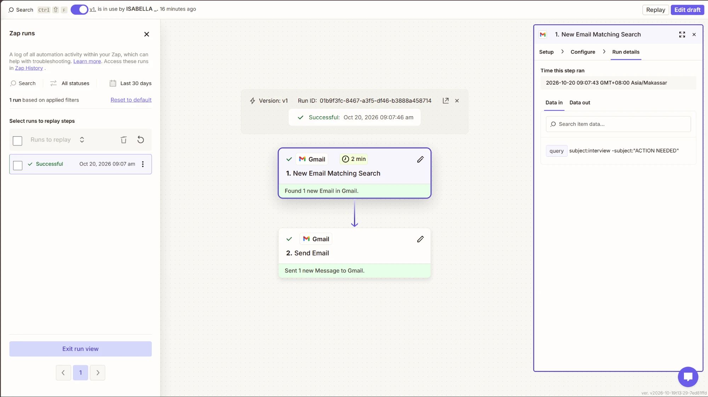
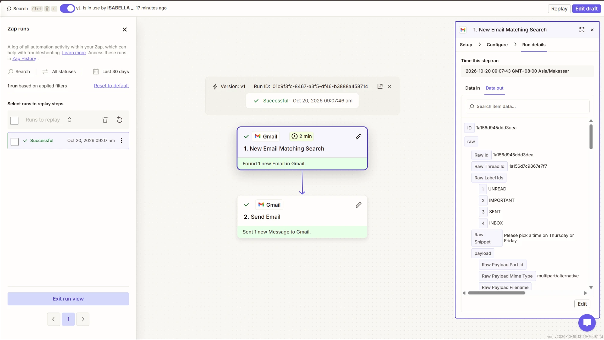
Tricky case
My prediction, written at 9:15 AM before running it. I will send myself an email titled “5 interview tips for fresh graduates – Career Newsletter”. It is not an invitation, but its subject contains “interview”, and my trigger checks only for that word. I expect the Zap to send me a wrong “ACTION NEEDED” alert.
The Zap has already made this mistake once. While I was setting it up, it picked a LinkedIn notification about a CEO’s Business Times interview as a “possible interview invite”.
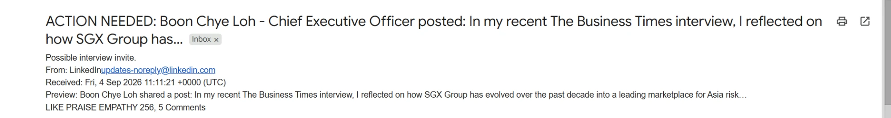
What happened. I sent the newsletter at 9:17 AM. At 09:17:49 the Zap sent me “ACTION NEEDED: 5 interview tips for fresh graduates – Career Newsletter”, as I predicted. Zap History marks the run Successful. The Zap worked as built but made the wrong call: “Successful” means every step ran, not that the output was right. That is why a person still has to read the alerts.
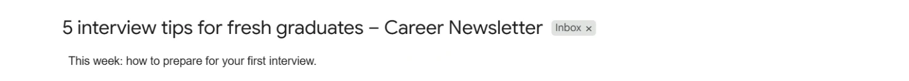
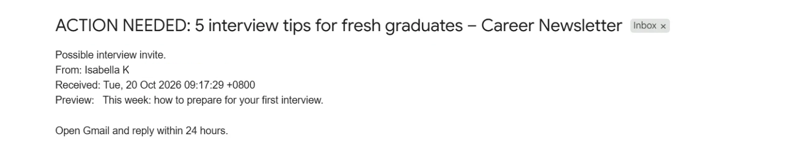
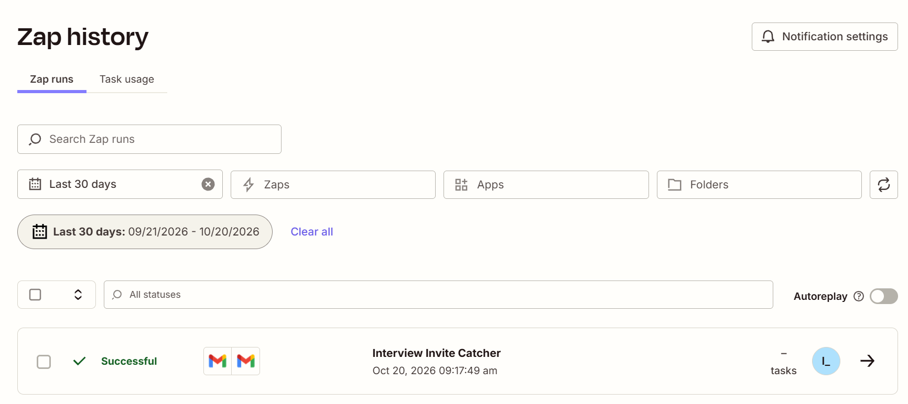
The fix
The problem was in step 1, not the alert. A search for “interview” alone cannot tell an invitation from a newsletter. I changed the search so the subject must also contain a word real invitations use, and published it as version 2, named “v2 – fix: require invite words”. Step 2 is unchanged.
| Before (v1) | subject:interview -subject:"ACTION NEEDED" |
|---|---|
| After (v2) | subject:interview (subject:invitation OR subject:invite OR subject:schedule OR subject:round OR subject:slot) -subject:"ACTION NEEDED" |
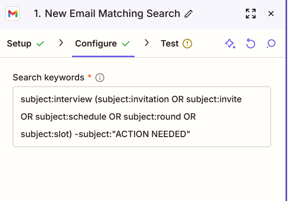
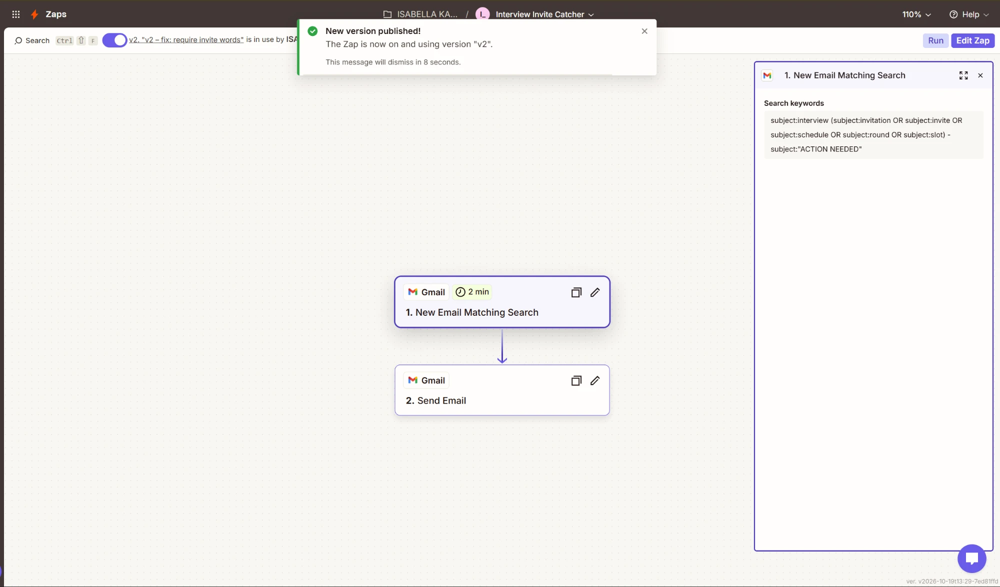
The tricky case, run again after the fix
At 9:28 AM I sent two emails. A was the same newsletter again, with “(week 2)” added so Gmail would not group it with the first one. B was a real invitation, to check that the fix had not broken the Zap.
| Subject | Expected | Result | |
|---|---|---|---|
| A | 5 interview tips for fresh graduates – Career Newsletter (week 2) | No alert | No alert and no run in Zap History. Fixed. |
| B | Interview invitation – Data Analyst role | Alert | Alert at 9:29 AM; Zap History run at 09:29:39 on version 2, Successful. |
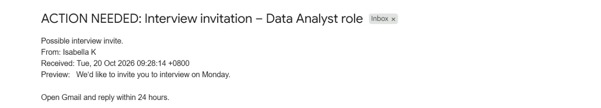
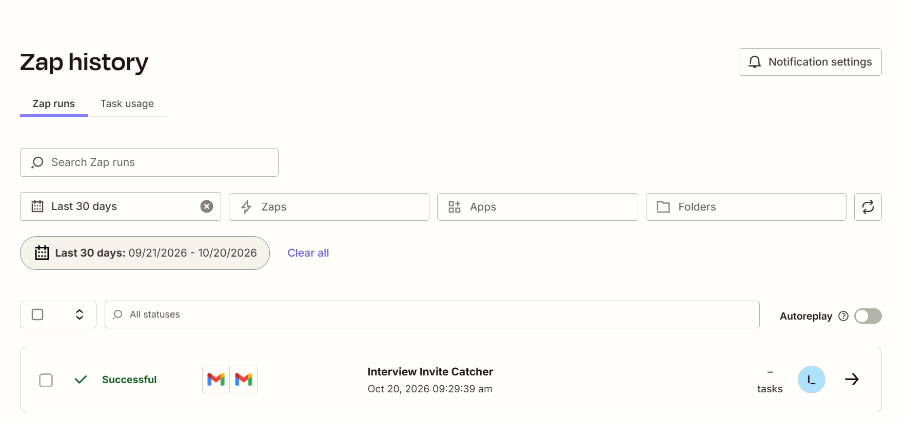
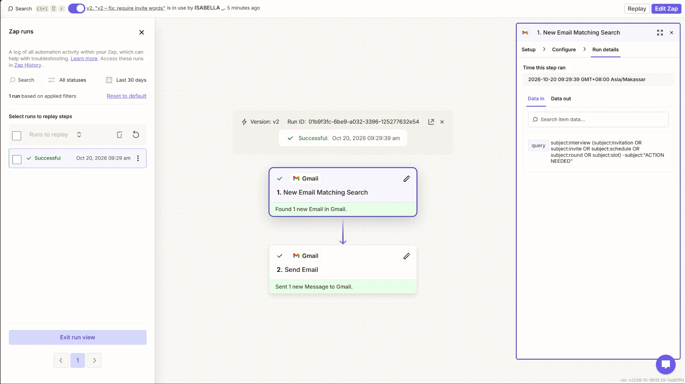
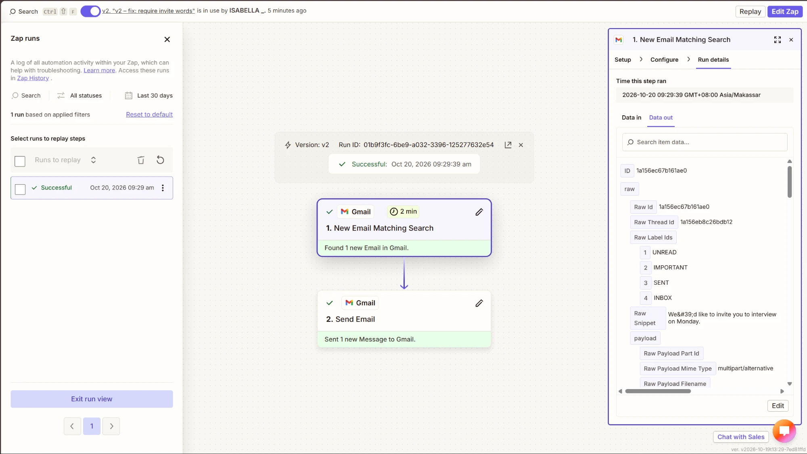
A second failure I found in the JSON export. At 09:27:52, a minute before I sent A and B, the Zap alerted me about email B while it was still a draft I was typing. The export shows the email it caught had the label DRAFT, and the 09:05:51 run did the same. My search covers all of Gmail, drafts included, so the agent can fire on an email nobody has sent. A did not cause either run. The next fix would add -in:drafts to the search.
The stricter search has a cost. An invitation titled only “Interview with DBS on Monday” has none of the five words, so version 2 would miss it. I traded fewer false alarms for a small risk of missing a real invite, which is why I still check my inbox against Zap History each evening.
Where my agent sits on our map
A person leads, AI inside
Agents run it, a person judges
AI alone, with checks
Interview Invite Catcher IKD · PS5
A person decides, AI alongside
Q1 · Where does my agent sit, and what does that mean for the person in the loop?
(a) My quadrant
AI alone, with checks (bottom left).
(b) The map’s two questions
Work with a right answer. An email either is an interview invitation or it is not, so every run can be marked right or wrong. My runs show this: runs 1–3 and email B were clearly right, and the newsletter and the LinkedIn post were clearly wrong. Judging them needed no taste and no weighing of options.
Work that either of them can do alone. I could sort my inbox myself, and the Zap did it with no one inside the run. Every alert arrived within about two minutes without me doing anything. The job needs a person to check the results, not to take part in each run.
(c) The person in the loop
I am the person at the gate, but the gate comes after the agent acts. The agent may read my inbox and send me an alert on its own. It may never email anyone else, reply to a recruiter or decide anything about a job. I check each alert by opening the original email before I reply, and each evening I compare my inbox with Zap History for misses and false alarms. The tricky case shows why this matters: Zap History marked the false alarm “Successful”, so only a person can tell a right run from a wrong one.
It would move to another quadrant if it did more. If it replied to recruiters to book interview slots, a wrong reply could cost me an interview, so I would approve every reply before it went out: A person leads, AI inside. If it judged which roles were worth applying for, there would be no single right answer and I would make the decision: A person decides, AI alongside.
(d) My group’s view
I agree with most of where Group 3 placed its tasks, including my own two: shortlisting 500 graduate applicants (Agents run it, a person judges) and drafting clinical notes (A person leads, AI inside). I would answer one question differently for CCH’s “Sort post comments”, which we placed in AI alone, with checks. Sorting comments as positive or negative has a right answer, but spotting a “problematic” comment, such as a complaint that could become a crisis or a legal threat, should not be left to AI alone. A social media manager has to read those. For that part I would answer “must do it together”, which moves it to A person leads, AI inside. My own agent taught me this: a simple rule looked right until one tricky case broke it.
Collaboration log
| What I delegated to AI | I used Claude, an AI assistant, to explain the problem set, draft my agent card and Gmail searches, crop my email address out of screenshots, build this page section, and draft the wording of Q1, this log and the reflection for me to review. Zapier runs the agent itself: it reads my inbox and sends the alerts. |
|---|---|
| What I checked, and how | I checked every alert against its run in Zap History, compared Data in (the search) with Data out (the email caught), and confirmed each alert went only to me. I compared Claude’s drafts with Zap History and my JSON export, which is how we found that the “duplicate” run was really a draft. |
| One AI error I caught | The first search, which Claude wrote, was too broad. It flagged a LinkedIn post about a CEO’s interview and a careers newsletter as “possible interview invites”. I caught it by testing, and we fixed it in version 2. When I first saw an extra run in Zap History, Claude and I took it for a duplicate. The JSON export showed the truth: the Zap had fired twice on unsent drafts. |
| Time and cost | About 2 hours on 20 October 2026. No money spent: Zapier’s free plan (a handful of runs, well within its monthly limit), plus free Gmail, GitHub and Vercel. |
Reflection
My agent fitted the job because spotting an interview invitation has a right answer and needs no judgement, so it could run alone and alert me within about two minutes. It failed in two ways that Zap History still marked “Successful”: a LinkedIn post and a newsletter set off alerts just for using the word “interview”, and it twice alerted me about drafts I had not sent yet. I would add -in:drafts, check the sender against companies I have applied to, and keep my evening check, because the stricter search could now miss an invitation titled only “Interview with DBS”.